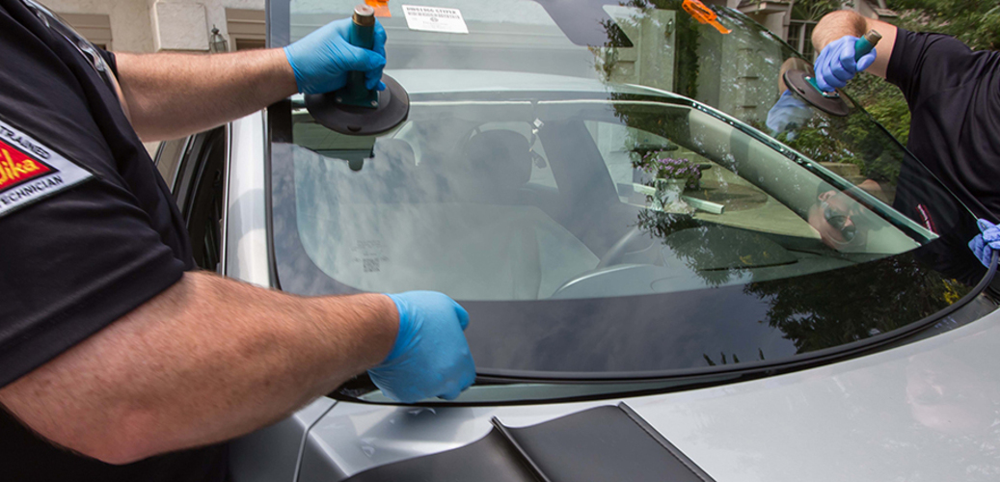
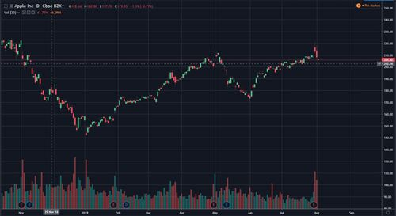
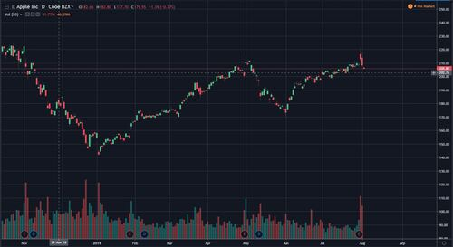
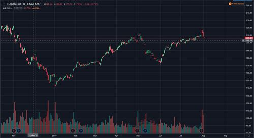

Tyler Chan
I am a second year Business Administration student who just recently switched majors from Biology. Although I'm still very interested in biology, I don't see myself staying in school longer to get a masters degree and without it a biology major isnt really that useful when finding employment. I made the tough decision to swtich and while I may not be working in the lab in the future, I'm hoping that I will be able to work on the administrative end of a biotech company or something of the sort so I can keep following my interests. I feel like working at a science based company and following along with the research will be satisfactory enough for me to keep my love of biology alive. Some of my strengths are that I can learn quickly and can adapt on the fly when things don't always go as planned. I also am very organized and like to do everything as efficiently as possibly. I'm hoping for an opportunity where I can uilize my skills and help contribute.
My main prior work experience has been at an auto glass body shop where they would repair car windors. I worked for about 3 months each for the last two summers and worked about 35 hours a week. I first started off by doing inventory, such as unloading glass panes from shipment crates and placing them into certain areas and cataloging them. I would also deliver glass to other auto body shops that ordered them around the city and would often spend several hours delivering to various garages. At first it was a little confusing because each glass has its own identification code and many of them were similar but I quickly got the hang of it. Another main issue was finding space to place new glass in at the warehouse because it was almost packed in every area so finding a place to put windshields and windows proved to be a difficult task. I also learned the basics to replacing broken glass and was starting to work on cars but school started and I had to take a break from working.
I spend a lot of time following the stock market and researching trends. It isn't any real experience but over the past year or two I've been studying and gaining an understanding of the market and how it works. Since I'm stil young and don't have much money to invest, I've been doing hypotheticals and following the trends of the market and certain companies that I'd like to invest in in the future. Other than that I don't have much real working experience.
Experience
Inventory/Delivery
• Delivered glass to other auto body shops
• Inventory and cataloging new shipments of glass
• Take calls for orders and give appraisal
Tutor/Babysit
• Pick up kids from school
• Helped with homework
• Cooked for them and watched them until parents came home
Education
UC Riverside
Portfolio

 

